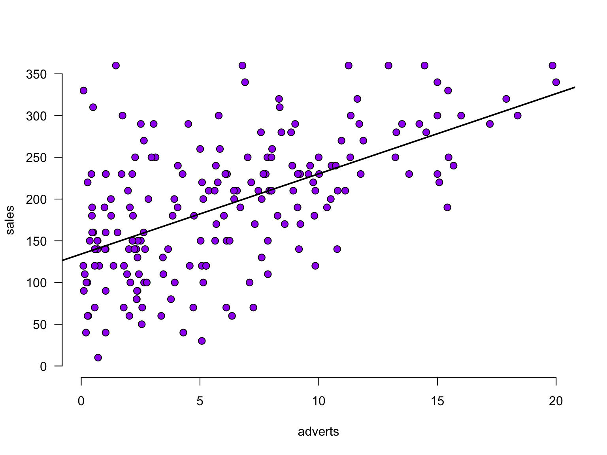

7. Linear Model (Regression)
In this lecture we discuss:
- Correlation
- In JASP
- Control for third variable
- Linear model
- Theory
- In JASP
Reading: Chapters 7, 8-8.8
Partial correlation
Venn diagram of Variance
Partial correlation
\[\LARGE{r_{xy \cdot z} = \frac{r_{xy} - r_{xz} r_{yz}}{\sqrt{(1 - r_{xz}^2)(1 - r_{yz}^2)}}}\]
adverts <- data$adverts
cor.sales.airplay <- cor(sales,airplay)
cor.sales.adverts <- cor(sales,adverts)
cor.airplay.adverts <- cor(airplay,adverts)
data.frame(cor.sales.airplay, cor.sales.adverts, cor.airplay.adverts) cor.sales.airplay cor.sales.adverts cor.airplay.adverts
1 0.6864408 0.08531506 -0.1130884numerator <- cor.sales.airplay - (cor.sales.adverts * cor.airplay.adverts)
denominator <- sqrt( (1-cor.sales.adverts^2)*(1-cor.airplay.adverts^2) )
partial.correlation <- numerator / denominator
partial.correlation[1] 0.7031469Significance of partial correlation
Locate in t-distribution
df <- N - 3
t.pr <- ( partial.correlation*sqrt(df) ) / sqrt(1-partial.correlation^2)
t.pr[1] 2.616364p-value
Regression
(one predictor)
Regression
\[\LARGE{\text{outcome} = \text{model prediction} + \text{error}}\]
In statistics, linear regression is a linear approach for modeling the relationship between a scalar dependent variable y and one or more explanatory variables denoted X. The case of one explanatory variable is called simple linear regression.
\[\LARGE{Y_i = \beta_0 + \beta_1 X_i + \epsilon_i}\]
In linear regression, the relationships are modeled using linear predictor functions whose unknown model parameters are estimated from the data.
Source: wikipedia
Assumptions of the Linear Model
A selection from Field (Section 8.4.1):
- Sensitivity (Section 6.4)
- Are there outliers?
- Normality (Section 6.7)
- Are the model errors non-normally distributed?
- Linearity (Section 6.6)
- Is the association non-linear?
- Homoscedasticity (Section 6.7)
- Is there systematic model error?
The greater the assumption violation, the less reliable your results are
Exam Note about Assumptions
For exam 1:
- We only focus on Sensitivity, Normality, Linearity
- We only focus on assessing the assumptions
- Don’t need to study ch6; lecture and application in ch8 suffice
Sensitivity
Outliers
- Extreme residuals (e.g., > 3)
- Cook’s distance (e.g., > 1)
- Check Q-Q, residuals plots, casewise diagnostics
Sensitivity

Normality
- Residuals should be normally distributed
- Look at Q-Q plot standardized residuals. Most points should be on the diagonal
- After the analysis is complete because it’s based on the residuals
- See figure 6.25
Linearity
- The relationship between predictors and the outcome should be linear
- Inspect using plots:
- Scatter plots (or partial plots) of predictors vs. outcome
- Residuals vs. predicted
- See figure 6.28

Homoscedasticity
- Variance of residuals should be equal across all expected values
- Look at scatterplot of residuals vs. predicted values. Ideally it’s an uncorrelated, round cloud
- For examples of violations, see here
- After the analysis is complete because it’s based on the residuals
The data
Predict album sales (x 1,000 copies) based on adverts (x 100,000£).
The data

Calculate regression parameters
\[{sales}_i = b_0 + b_1 {adverts}_i + \epsilon_i\]
adverts <- data$adverts
sales <- data$salesCalculate \(b_1\)
\[b_1 = r_{xy} \frac{s_y}{s_x}\]
# Calculate b1
cor.sales.adverts <- cor(sales,adverts)
sd.sales <- sd(sales)
sd.adverts <- sd(adverts)
b1 <- cor.sales.adverts * ( sd.sales / sd.adverts )
b1[1] 9.613511Calculate \(b_0\)
\[b_0 = \bar{y} - b_1 \bar{x}\]
mean.sales <- mean(sales)
mean.adverts <- mean(adverts)
b0 <- mean.sales - b1 * mean.adverts
b0[1] 134.1274The slope

The slope

The slope - zoomed in

For every additional adverts, we predict sales to increase by 9.61
Define regression equation
\[\widehat{sales} = {\text{model prediction}} = b_0 + b_1 {adverts}\] \[\widehat{sales} = {\text{model prediction}} = 134.13 + 9.61\times {adverts}\]
So now we can add the expected sales based on this model
prediction <- b0 + b1 * adverts
data$prediction <- round(prediction, 2)Predicted values
Let’s have a look
\(y\) vs \(\hat{y}\)
And lets have a look at this relation between model prediction and observed

Error
The error (residual) is the difference between the model predictions and observed values
error <- sales - prediction
data$error <- round(error, 2)Normality of Residuals
Are the residuals normally distributed?
Model fit
- The fit of the model can be viewed in terms of the correlation (\(r\)) between the predictions and the observed values: if the predictions are perfect, the correlation will be 1.
- For simple regression, this is equal to the correlation between adverts and sales. For multiple regression (block 3), these will differ.
r <- cor(prediction, sales)
r[1] 0.5785264Explained variance
Squaring this correlation gives the proportion of variance in sales that is explained by adverts:
r^2[1] 0.3346928Explained variance visually (\(n = 10\))

\(r^2\) is the proportion of blue to orange, while \(1 - r^2\) is the proportion of red to orange
Calculate t-values for b’s for hypothesis testing
We can also convert each \(b\) to a \(t\)-statistic, since that has a known sampling distribution:
\[\begin{aligned} t_{n-p-1} &= \frac{b - \mu_b}{{SE}_b} \\ df &= n - p - 1 \\ \end{aligned}\]
Where \(b\) is the beta coefficient, \({SE}\) is the standard error of the beta coefficient, \(n\) is the number of subjects and \(p\) the number of predictors. \(\mu_b\) is the null-hypothesized value for \(b\) - usually set to 0.
Converting b to \(t\)
# Get Standard error's for b (bonus)
se.b1 <- sqrt((n/(n-2)) * mean(error^2) / (var(adverts) * (n-1))); se.b1[1] 0.9632463# Calculate t for b1
mu.b1 <- 0
t.b1 <- (b1 - mu.b1) / se.b1; t.b1[1] 9.980326n <- nrow(data) # number of rows
p <- 1 # number of predictors
df.b1 <- n - p - 1P-values of \(b_1\)
So how many @!&#$ ways do we have for assessing an association?!
# the correlation between x and y, standardized (between -1, 1)
cor(sales, adverts) [1] 0.5785264# the covariance between x and y, unstandardized
cov(sales, adverts)[1] 226.7254# regression coefficient in linear regression, standardized (not bounded)
# generalizes easily to settings with multiple predictors
b1 # how much does y-prediction increase, if we increase x by 1 unit?[1] 9.613511# t-statistic: standardized difference between b1 and 0
t.b1 # used for testing the null hypothesis that b1 = 0[1] 9.980326# The metrics below are more indicative of an overall model's performance
# the correlation between y and model prediction, standardized (between -1, 1)
cor(sales, prediction) # can be squared to get proportion explained variance[1] 0.5785264Recommended Exercises
- Exercise 7.6, Exercise 7.7
- Note:
pets.jaspcan also be downloaded from the Data page
- Note:
- Exercise 8.1
Contact